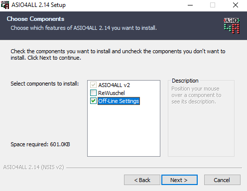
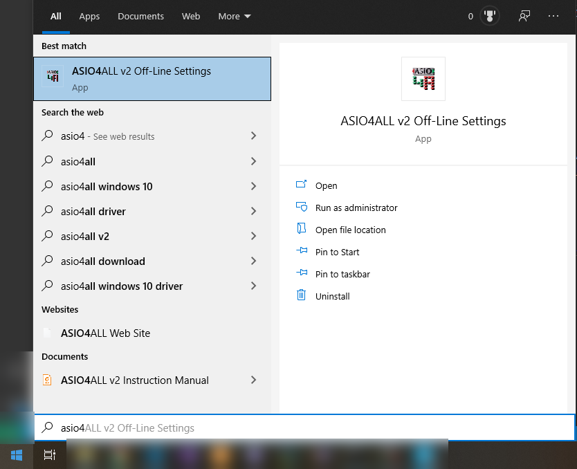
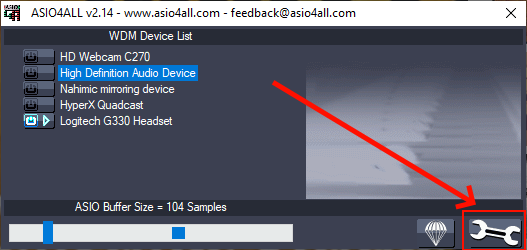
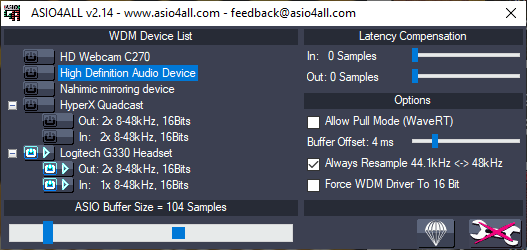
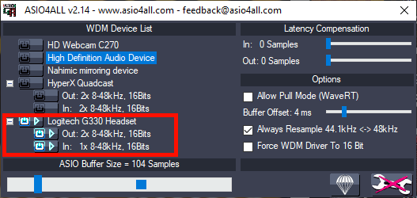
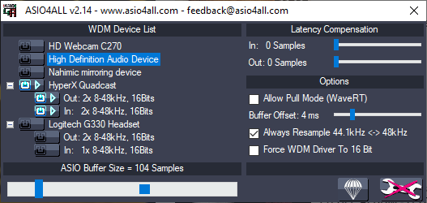

FAQ
Topics:
- Installation
- How do I edit ASIO settings?
- I cannot hear anything/others cannot hear me.
- What is ASIO?
- Why is ASIO necessary?
Installation
DistanSing is meant to be run without any installation required. The one caveat to this is that the ASIO driver "ASIO4ALL" must be installed. Download ASIO HERE
(Make sure you also install the ASIO Offline Settings!)

How do I edit ASIO settings?
When you installed ASIO4ALL you should have checked the option to install the "ASIO4ALL Offline Settings". (See here)
Open these settings by searching for them in your windows start menu.
Opening this will bring up the settings.
Clicking the "wrench" icon will bring up the advanced settings. (Most Useful)
Here is an example of what the advanced setting might look like. Notice how it lists all of the possible audio cards you have. In my case, I have:
- HD webcam - Has a built in microphone
- High Definition Audio Device - My default Windows 10 sound card
- Nahimic mirroring device - An add on sound card I have.
- HyperX Quadcast - My condenser microphone
- Logitech G330 Headset - A USB Headset
The ones which have a '+' or '-' next to them are devices which support both input and output.
The "Power" button indicates which device is selected, and also which sub-devices are selected within the selected device.
A "Subdevice" indicates different input devices or capabilities, for most devices there will be one output and one input device.
For DistanSing to work properly, only one master device should be chosen, and then only one output and one input device chosen before DistanSing is started.
In my case, my Logitech G330 Is selected (The power button is lit up for the entire device). And its respective input and output devices are selected as well. If I wanted to select my HyperX Quadcast condenser microphone, I would click the power button for that device as well as the respective input/output subdevices. I would also deselect the logitech headset and its subdevices. As shown below:
I cannot hear anything/others cannot hear me.
The primary reason for audio/microphone not working is due to ASIO not being configured properly. ASIO is required for the low-latency to work properly. Follow the instructions under How do I edit ASIO settings? to ensure that your ASIO settings are correctly set up.
What is ASIO?
ASIO (Audio Stream Input/Output) is a protocol allowing for ultra-fast communication between a software application and a computer's sound card. It was developed by Steinberg in 1997.
The Audio Stream I/O API addresses the areas of efficient audio processing, high data throughput, synchronization, low latency and extensibility on the audio hardware side. The interface is not bound to any fixed number of input and output channels (of course these numbers are limited by the processing power and data throughput of the computer system itself). It puts no limitation on the sample rate (32 kHz to 96 kHz or higher), sample format (16, 24, 32 bit or 32/64 bit floating point formats). It takes advantage of today’s computer architectures for high data throughput (PCI, FireWire, USB). It supports sophisticated hardware solutions for additional audio processing but it remains simple in comparison to other approaches.
Why is ASIO necessary?
Through our research, we have found that the maximum tolerable latency (the delay for sound to travel from sender to receiver) is about 20 milliseconds.
Without ASIO, the absolute lowest latency we could achieve was somewhere between 100 - 150 milliseconds. This is not a problem whatsoever in traditional conference call/audio streaming use cases. However, with our goal being realtime audio, this was unacceptable.
We discovered ASIO as a method for achieving low-latency. Our initial tests were promising, giving us an optimistic 5 - 10 ms minimum latency!
The one problem with ASIO is that it completely hijacks the sound card, and thus presents undefined behavior when other programs wish to playback audio or access the microphone. This was an acceptable tradeoff for us.